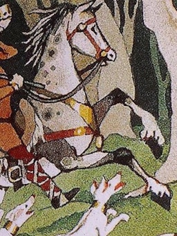
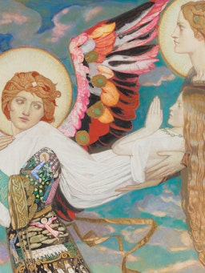
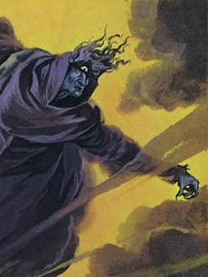
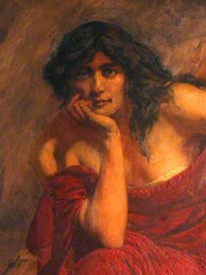
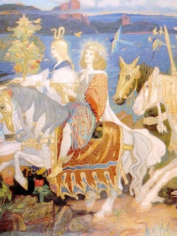
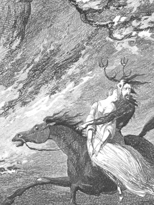
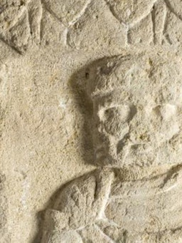
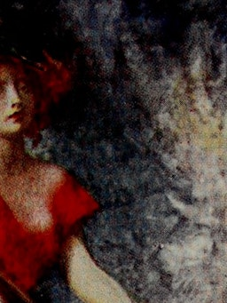
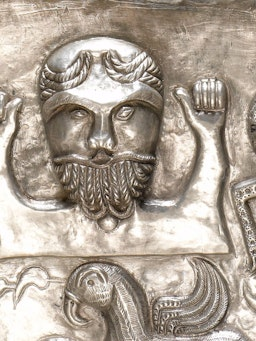

.jpeg)
.jpeg)
Celtic Mythology |
Celtic mythology is the collection of stories and folklore from various ancient Celtic cultures like the Irish, the Welsh, and the Gauls. Many of these myths were suppressed by Roman conquerors, with their first widespread recordings dating from the early medieval period. |
________
|  |
ArawnA skillful magician who ruled the realm of Annwn, the Celtic Otherworld. |
|  |
BrigidThe “Exalted One,” revered Celtic goddess of fertility, fire, and passion. |
|  |
CailleachThe “Veiled One,” an ancient Celtic goddess of the winds and winter. |
|  |
CeridwenPowerful Celtic sorceress whose potions brought beauty and wisdom. |
|  |
DagdaThe “good god,” Celtic deity and chief of the Tuatha dé Danann. |
|  |
Herne the HunterTerrifying Celtic specter haunting the English county of Berkshire. |
|  |
LughLugh “of the Long Arm,” Celtic god of kings, justice, and leadership. |
|  |
MorriganThe fearsome Irish goddess of war, death, and prophecy |
|  |
Taranis“The Thunderer,” a powerful Celtic god of thunder and storms. |
________
Celtic mythology is the body of myths belonging to the Celtic peoples.Like other Iron Age Europeans, Celtic peoples followed a polytheistic religion, having many gods and goddesses. The mythologies of continental Celtic peoples, such as the Gauls and Celtiberians, did not survive their conquest by the Roman Empire, the loss of their Celtic languages and their subsequent conversion to Christianity. Only remnants are found in Greco-Roman sources and archaeology. Most surviving Celtic mythology belongs to the Insular Celtic peoples (the Gaels of Ireland and Scotland; the Celtic Britons of western Britain and Brittany). They preserved some of their myths in oral lore, which were eventually written down by Christian scribes in the Middle Ages. Irish mythology has the largest written body of myths, followed by Welsh mythology.
|
|
|
The supernatural race called the Tuatha Dé Danann is believed to be based on the main Celtic gods of Ireland, while many Welsh characters belong either to the Plant Dôn ("Children of Dôn") or the Plant Llŷr ("Children of Llŷr"). Some figures in Insular Celtic myth have ancient continental parallels: Irish Lugh and Welsh Lleu are cognate with Lugus, Goibniu and Gofannon with Gobannos, Macán and Mabon with Maponos, and so on. One common figure is the sovereignty goddess, who represents the land and bestows sovereignty on a king by marrying him. The Otherworld is also a common motif, a parallel realm of the supernatural races, which is visited by some mythical heroes. Celtic myth influenced later Arthurian legend.